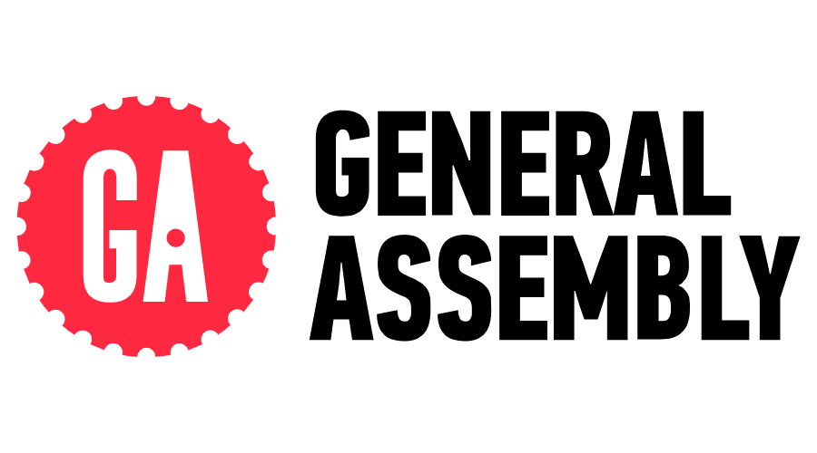

Graduating from General Assembly: 9 Months of Code, Coffee, and Growth
(Image Credit: General Assembly)
From Spreadsheets to Software
Nine months ago, I took the leap from finance and accounting into the world of full-stack software engineering. I signed up for General Assembly’s Software Engineering Bootcamp, not fully knowing what I was getting myself into—but let me tell you, it was one of the hardest, most rewarding experiences of my life.
Before this, my days were filled with balance sheets, Excel formulas, and financial audits. Now? I’m writing Python scripts, building React applications, and talking about API integrations like it’s my second language. It still blows my mind how much can change in less than a year!

(Actual footage of me debugging at 2 AM.)
Bootcamp Life: A Rollercoaster of Emotions
- 💻 Learning to Learn – Coding isn’t about memorization; it’s about problem-solving and debugging.
- ☕ Surviving on Coffee & Late Nights – Daily standups, lectures, and projects meant Stork cold brew became my best friend, and I was known on a first name basis at my local coffee shop "Shagaf".
- 👩💻 Impostor Syndrome is Real (But Temporary) – The first months were tough, but building my own projects changed everything.
Building Real-World Projects
One of the things I loved about General Assembly was how hands-on it was. By the end of the program, I had built multiple full-stack applications from scratch, including:
- ✅ A personalized library app to track my reading progress
- ✅ A skincare products review page with a classmate
- ✅ A recipie saving app using Django & React

(Building real-world applications was the best part!)
What’s Next?
Graduating from General Assembly isn’t the finish line—it’s just the beginning. Now, I’m actively job hunting for my first full-time role as a software engineer. It’s exciting, nerve-wracking, and honestly a little surreal.
If you’re thinking about transitioning into tech, I highly recommend checking out General Assembly. It’s a life-changing experience, especially if you’re willing to put in the work and push through the tough moments.
Final Thoughts
✨ You are capable of learning anything. ✨
Seriously, tech can feel intimidating, but everyone starts somewhere. If I can go from finance to full-stack development in under a year, so can you.
Now, if you’ll excuse me, I have some job applications to send out… and probably another cup of coffee to drink. ☕
📢 Let’s Connect!
Are you also transitioning into tech? Let’s chat! Find me on LinkedIn or check out my portfolio here.